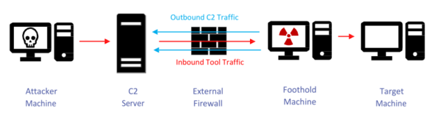

Dynamic Port Forwarding. Mapping the internal network
Dynamic Port Forwarding unlike Local/Remote Port Forwarding allows a communication not on a single port, but across a range of ports.
To do that we have 2 options:
• ssh Dynamic Port Forwarding
• Metasploit Dynamic Port Forwarding
Bibliography:
•
https://unix.stackexchange.com/questions/115897/whats-ssh-port-forwarding-and-whats-the-difference-between-ssh-local-and-remot•
https://zaiste.net/posts/ssh-port-forwarding/•
https://pen-testing.sans.org/resources/papers/gwapt/tunneling-pivoting-web-application-penetration-testing-120229